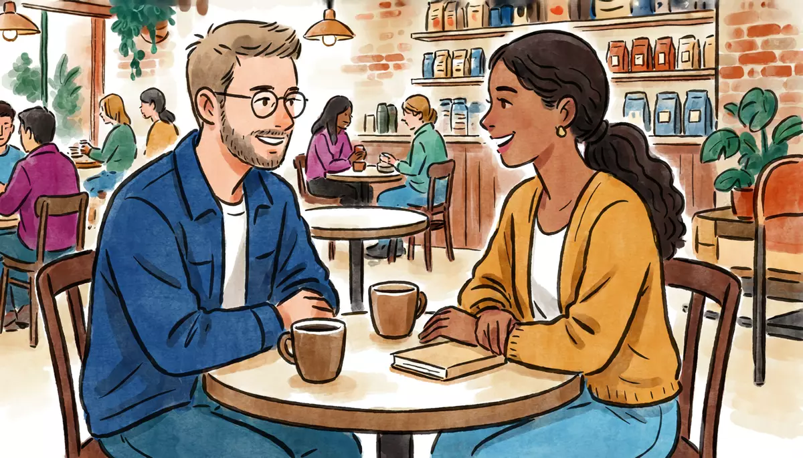

I can introduce myself: my name, where I'm from, where I live and my job.Goal of this lesson · CEFR Overall spoken interaction A1; Information exchange A1
Paso 1 de 8
EscuchaListen
Listen to the conversation, then answer the questions.

Thursday evening, a language exchange (intercambio) at a café in Coyoacán: half an hour in Spanish, half an hour in English. Alex meets his partner, Mariana. tú (people of the same age at a language exchange)
First listen without the text. Press Escuchar todo and answer the first question. Then show the Spanish text and listen again.
ChooseWhere is Mariana from?
Your answer:
M
Mariana¡Hola! ¿Tú eres Alex? Soy Mariana, del intercambio.Hi! Are you Alex? I'm Mariana, from the language exchange.
A
Alex¡Hola, Mariana! Sí, soy Alex. Mucho gusto.Hi, Mariana! Yes, I'm Alex. Nice to meet you.
M
MarianaMucho gusto. Siéntate, siéntate. Bueno, ¿de dónde eres?Nice to meet you. Sit down, sit down. So, where are you from?
A
AlexSoy de Estados Unidos, de Chicago. ¿Y tú?I'm from the United States, from Chicago. And you?
M
MarianaYo soy de Puebla, pero vivo aquí en Coyoacán. ¿Y tú dónde vives?I'm from Puebla, but I live here in Coyoacán. And where do you live?
A
AlexVivo en la Narvarte, en la casa de una señora muy amable.I live in Narvarte, in the house of a very kind lady.
M
Mariana¡Ah, qué bien! ¿Y a qué te dedicas?Oh, great! And what do you do?
A
AlexSoy maestro de inglés. Trabajo en una escuela de idiomas. ¿Y tú?I'm an English teacher. I work at a language school. And you?
M
MarianaYo soy arquitecta. Trabajo en un despacho en el centro.I'm an architect. I work at an office downtown.
A
Alex¡Qué interesante! ¿Hablas inglés?How interesting! Do you speak English?
M
MarianaSí, un poco. Por eso vengo al intercambio. ¿Y tú hablas español?Yes, a little. That's why I come to the exchange. And do you speak Spanish?
MarianaPues hablas muy bien. Oye, tu nombre, ¿se escribe con equis?Well, you speak very well. Hey, your name, is it spelled with an X?
A
AlexSí: a, ele, e, equis.Yes: A, L, E, X.
1
ChooseListen again and answer.
Where does Alex live?
What is Mariana's job?
Why does Mariana come to the language exchange?
Una persona nueva: someone new
A woman comes over to their table.
S
SofíaPerdón, ¿aquí es el intercambio?Excuse me, is this the language exchange?
M
Mariana¡Sí, aquí es! ¿Cómo te llamas?Yes, it's here! What's your name?
S
SofíaMe llamo Sofía. ¿Y ustedes?My name is Sofía. And you two?
M
MarianaYo me llamo Mariana, y él se llama Alex.My name is Mariana, and his name is Alex.
A
AlexHola, Sofía. Mucho gusto.Hi, Sofía. Nice to meet you.
1
ChooseAnswer the questions: Una persona nueva: someone new
¿Cómo te llamas? means…
Paso 2 de 8
FíjateNotice
Read how it works. Play the examples and repeat them aloud.
Talking about yourself: soy, vivo, trabajo, hablo
Spanish verbs change their ending for each person. Look at the endings: -o for yo, -as / -es for tú, -a / -e for él, ella, usted. Ser (to be) is irregular. Llamarse (to be called) carries a little word in front: me llamo, te llamas, se llama.
ser
vivir
trabajar
yo
soy
vivo
trabajo
tú
eres
vives
trabajas
él, ella, usted
es
vive
trabaja
hablar
llamarse
yo
hablo
me llamo
tú
hablas
te llamas
él, ella, usted
habla
se llama
From the conversation:
Soy de Estados Unidos, de Chicago. ¿Y tú?I'm from the United States, from Chicago. And you?
Yo soy de Puebla, pero vivo aquí en Coyoacán. ¿Y tú dónde vives?I'm from Puebla, but I live here in Coyoacán. And where do you live?
Soy maestro de inglés. Trabajo en una escuela de idiomas. ¿Y tú?I'm an English teacher. I work at a language school. And you?
Soy de + place = where you are from. Vivo en + place = where you live (not vivo a).
Asking questions
Question words carry an accent: ¿dónde? (where), ¿de dónde? (where from), ¿cómo? (how), ¿qué? (what). For a yes/no question, just make your voice go up: ¿Hablas inglés? To ask about someone's job, Mexicans say ¿A qué te dedicas? (literally "What do you dedicate yourself to?"). Bounce any question back with ¿Y tú?
From the conversation:
Mucho gusto. Siéntate, siéntate. Bueno, ¿de dónde eres?Nice to meet you. Sit down, sit down. So, where are you from?
¡Ah, qué bien! ¿Y a qué te dedicas?Oh, great! And what do you do?
¡Qué interesante! ¿Hablas inglés?How interesting! Do you speak English?
Maestro, maestra: men and women
Many words for jobs and nationalities end in -o for a man and -a for a woman: maestro / maestra, arquitecto / arquitecta, mexicano / mexicana. Most words ending in -e or -ista are the same for both: estudiante, estadounidense, canadiense, dentista. A consonant gets -a for a woman: español → española, inglés → inglesa (the accent goes).
a man
a woman
Soy maestro.
Soy maestra.
Soy mexicano.
Soy mexicana.
Soy estudiante.
Soy estudiante.
Soy japonés.
Soy japonesa.
From the conversation:
Yo soy arquitecta. Trabajo en un despacho en el centro.I'm an architect. I work at an office downtown.
No un / una before a job: Soy arquitecta, not Soy una arquitecta.
El, la, un, una: articles
Every Spanish noun is masculine or feminine. Most nouns ending in -o are masculine (el despacho) and most ending in -a are feminine (la colonia); for others, learn the article with the word (el país, la ciudad). The = el (masculine) / la (feminine); plural los / las. A, an = un / una; plural unos / unas (some).
Meaning
masculine
feminine
the (one)
el despacho
la escuela
the (more)
los despachos
las escuelas
a / an
un despacho
una escuela
some
unos amigos
unas amigas
From the conversation:
Yo soy arquitecta. Trabajo en un despacho en el centro.I'm an architect. I work at an office downtown.
Soy maestro de inglés. Trabajo en una escuela de idiomas. ¿Y tú?I'm an English teacher. I work at a language school. And you?
That's why the Palabras lists always give the article: learn la ciudad, not just ciudad.
Paso 3 de 8
PracticaPractice
Do the exercises in order. They get freer as you go.
1
ChooseChoose the best answer to each question.
¿De dónde eres?
¿Dónde vives?
¿A qué te dedicas?
¿Hablas español?
2
Type the missing wordsComplete with the right form of the verb in brackets.
Yo en Coyoacán. (vivir)
I live in Coyoacán.
¿Tú en el centro? (trabajar)
Do you work downtown?
Mariana de Puebla. (ser)
Mariana is from Puebla.
¿ inglés? (hablar, tú)
Do you speak English?
Alex en una escuela de idiomas. (trabajar)
Alex works at a language school.
Hola, me Sofía. (llamarse)
Hi, my name is Sofía.
3
ChooseMan or woman? Choose the right word.
Mariana es ___.
Sofía es ___, de Bogotá.
Alex es ___.
Kenji es ___.
4
Listen and chooseFour people introduce themselves. Listen and answer.
Where is Rocío from?
Show what they say
Rocío: Hola, soy Rocío. Soy de Monterrey, pero vivo en la Ciudad de México. Soy directora de una escuela.
What does don Chuy have in Narvarte?
Show what they say
Don Chuy: Buenas. Yo me llamo Jesús, pero todos me dicen don Chuy. Soy de aquí, de la Ciudad de México. Tengo una fonda en la Narvarte.
What is Daniela's job?
Show what they say
Daniela: Me llamo Daniela. Soy colombiana, de Bogotá. Trabajo en un hospital: soy enfermera.
Where does Kenji live?
Show what they say
Kenji: Hola, soy Kenji. Soy de Japón, pero vivo en Guadalajara. Soy estudiante.
5
Put the words in orderPut the words in order.
I'm from Puebla, but I live in Coyoacán.
And what do you do?
I work at a language school.
6
Say it in SpanishNow you. Say it in Spanish (or type it). Use Alex's details.
Say hi, your name, and "nice to meet you".
Hola, me llamo Alex. Mucho gusto.
Ask a new friend his or her name.
¿Cómo te llamas?
Say you're from the United States, then ask "And you?".
Soy de Estados Unidos. ¿Y tú?
Ask where he or she lives.
¿Dónde vives?
Say you live in Narvarte.
Vivo en la Narvarte.
Ask what he or she does for a living.
¿A qué te dedicas?
Say you're a teacher and you work at a language school.
Soy maestro. Trabajo en una escuela de idiomas.
A woman says maestra.
7
Your own sentencesAbout you.
Write four sentences about yourself: your name, where you're from, where you live, and your job.
Show a model answer
Me llamo Emma. Soy de Canadá, de Toronto. Vivo en Guadalajara. Soy enfermera y trabajo en un hospital.
Check your answer:
Paso 4 de 8
PalabrasWords
Listen to each word and repeat it. Then do the quick check.
Países y nacionalidadescountries and nationalities
México: mexicano, mexicanaMexico: Mexican
Estados Unidos: estadounidensethe United States: American
Mariana shows Alex the app where people look for language-exchange partners. Read Daniel's profile.
Language-exchange app profile
DR
Daniel Ramírez, 34
¡Hola! Me llamo Daniel. Soy de Guadalajara, pero vivo en la Ciudad de México, en la colonia Roma.
Soy ingeniero y trabajo en una empresacompany de software. Hablo español e inglés, y estudio francés.
BuscoI'm looking for un intercambio de español y francés, los sábados en la mañana, en un café de la Roma o de la Condesa. Mi francés es básico, pero mi inglés es bueno.
Me gusta muchoI really like el cine y la música. Soy tranquilo y puntualpunctual. ¿Eres de Francia, de Canadá o de Bélgica y vives en la Ciudad de México? ¡EscríbemeWrite to me!
Words with a dotted underline have a translation: tap or hover.
1
ChooseAnswer the questions about the text.
Where is Daniel from?
What is his job?
Which language does he want to practice?
When and where does he want to meet?
Paso 6 de 8
CulturaCulture
Read about the culture behind the language.
Americano, estadounidense or gringo?
In Mexico, a person from the United States is estadounidense (the official word). Many people also say americano or norteamericano, although some point out that everyone from Patagonia to Canada is from America. Gringo is very common in everyday speech; it is usually just descriptive or friendly, but it can sound negative, so don't use it about others. The safest way to talk about yourself: Soy de Estados Unidos.
Spanish is the main language of 20 countries plus Puerto Rico, from Spain and Equatorial Guinea to Argentina. Mexico has more Spanish speakers than any other country: more than 120 million. In Mexico, Spanish lives alongside 68 Indigenous languages (Nahuatl, Maya, Zapotec and many more), which the law also recognizes as national languages.
Elsewhere: Asking about jobs: ¿A qué te dedicas? and ¿En qué trabajas? are common in Mexico and everywhere else. Careful with ¿Qué haces?: in Mexico it usually means "What are you doing (right now)?".
Sources
Instituto Cervantes, El español: una lengua viva. Informe 2023.
INALI (Instituto Nacional de Lenguas Indígenas), Catálogo de las lenguas indígenas nacionales (68 language groups).
Ley General de Derechos Lingüísticos de los Pueblos Indígenas (México, 2003), art. 4.
1
ChooseCheck: what did you learn?
What's the safest way to say where you're from, if you're from the US?
Paso 7 de 8
Tu turnoYour turn
Now use it: do the role play, then write.
Role play: Your first language exchange
You're at the Thursday intercambio in a café in Coyoacán. You meet Mariana for the first time. Use tú: you are about the same age. Use your own name, country, city and job.
You
Say hi and your name.
Say where you're from and ask where she's from.
Say where you live and ask where she lives.
Say what you do and ask what she does.
Answer her question about languages; say goodbye.
Mariana
Greets you and asks your name.
Asks where you're from; answers your questions.
Asks what you do.
Asks if you speak Spanish.
Says goodbye: ¡Nos vemos el jueves!
1. Listen to a model
One way the conversation could go. Listen, then try it yourself without looking.
M
Mariana¡Hola! Soy Mariana. ¿Cómo te llamas?Hi! I'm Mariana. What's your name?
A
AlexHola, Mariana. Me llamo Alex. Mucho gusto.Hi, Mariana. My name is Alex. Nice to meet you.
M
MarianaMucho gusto. ¿De dónde eres, Alex?Nice to meet you. Where are you from, Alex?
A
AlexSoy de Estados Unidos, de Chicago. ¿Y tú?I'm from the United States, from Chicago. And you?
M
MarianaSoy de Puebla, pero vivo en Coyoacán. ¿A qué te dedicas?I'm from Puebla, but I live in Coyoacán. What do you do?
A
AlexSoy maestro de inglés. ¿Y tú?I'm an English teacher. And you?
M
MarianaSoy arquitecta. ¿Hablas español?I'm an architect. Do you speak Spanish?
Mariana¡Muy bien! Bueno, ¡nos vemos el jueves!Very good! Well, see you on Thursday!
A
Alex¡Sí, nos vemos! Hasta luego.Yes, see you! Bye.
2. Record yourself
Say your part aloud (pause the model after each of Mariana's lines), or answer the questions in the role card. Then play it back and compare.
3. Practice with an AI partner (optional)
Copy this prompt into ChatGPT or Claude, switch on voice mode, and have the conversation. It plays Mariana.
Stuck? Say «ayuda» and it gives you a hint in English, then carries on.
Finished? Say «terminamos» and it gives you feedback in English: what you did well, your mistakes, and useful phrases for next time.
Let's practice Spanish (Mexican Spanish, level A1). You are Mariana, 28, an architect from Puebla who lives in Coyoacán, Mexico City. We just met at a Thursday-evening language exchange (intercambio) at a café. Use "tú" with me.
About you: from Puebla; lives in Coyoacán with a roommate; works at a small architecture office downtown; speaks a little English; likes coffee and walking in the Viveros park.
Rules:
- Speak only Spanish, short turns (1-2 sentences), simple language for an A1 learner. Speak slowly and use very common words.
- Lead like a friendly new acquaintance: say hi, then ask my name, where I'm from, where I live and what I do, one question at a time. Answer my questions about you. After each of my answers, react briefly ("¡Qué bien!", "¡Qué interesante!") and ask the next question.
- You play only this one person. Never speak as anyone else, and don't describe what other people say or do.
- If I make a mistake, don't stop me: repeat what I said correctly in your answer (for example: I say "Yo soy vivo en Chicago" and you say "Ah, vives en Chicago. ¡Qué bien!").
- After I say my name, say it back slightly wrong once, so I have to correct you or spell it. Later, ask me one question I probably didn't prepare: "¿Por qué estudias español?"
- When I say "ayuda", step out of the role play for a moment: in English, give me a short hint about what I could say next, with one or two short Spanish options, then continue the role play where we were.
- When I say "terminamos", stop the role play and give me feedback in English: 3 things I did well, up to 3 mistakes with corrections, and 3 useful phrases for next time.
Start now: greet me and ask my name.
Writing: Your language-exchange profile
Write your own profile for the language-exchange app, like Daniel's: your name, where you're from, where you live, your job, the languages you speak, and what you're looking for.
30–60 words.
Show a model answer
¡Hola! Me llamo Alex. Soy de Estados Unidos, de Chicago, pero vivo en la Ciudad de México, en la colonia Narvarte. Soy maestro de inglés y trabajo en una escuela de idiomas. Hablo inglés y un poco de español. Busco un intercambio de inglés y español. ¡Escríbeme!
Check your text:
Paso 8 de 8
¿Lo logré?Did I do it?
Check yourself against the goal of the lesson.
Read each statement and be honest: anything marked casi or todavía no goes into Repaso so it comes back soon.
I can say my name and ask someone's name.
I can say where I'm from and ask where someone is from.
I can say where I live and ask where someone lives.